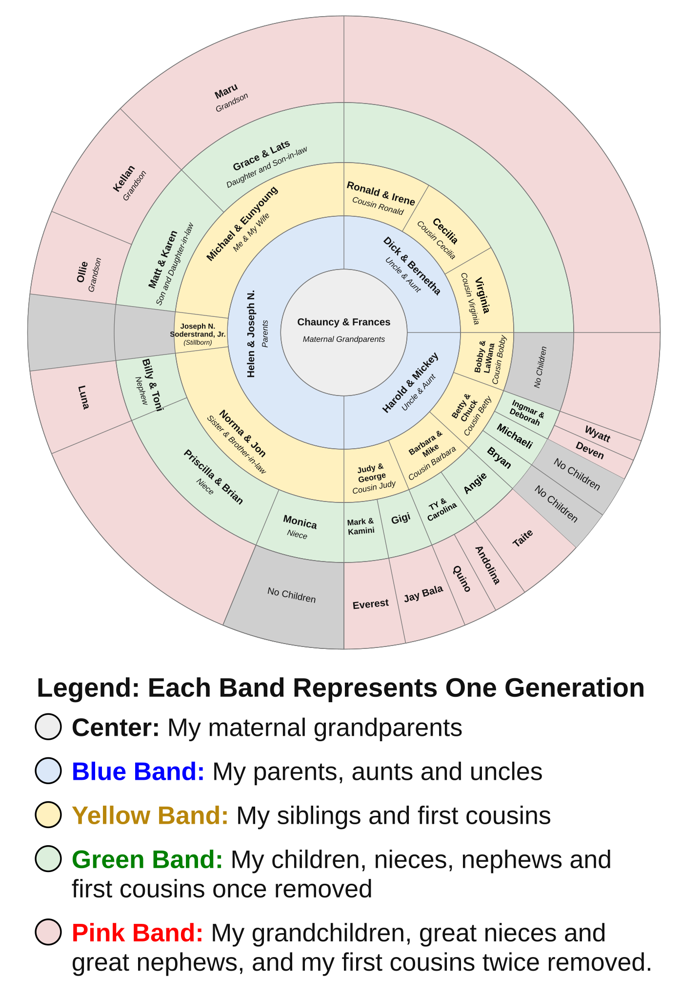

My Cousins
When I was a child, my closest cousins were Uncle Harold and Aunt Mickey’s children: Judy, Barbara, Betty, and Bobby. We visited them in Midland, Texas, many times, and they visited us in Sacramento, California, many times as well. When I think of my cousins, these four are usually the people who come to mind.

Judy, Barbara, Betty, and Bobby
Judy was older than I was, and we had a special relationship that began when we were children and lasted until she died. She looked after me when I was young. Later, we visited each other in many places, including her home in Millbrook, New York; her favorite vacation place, Monterey, California; and Sacramento and San Francisco.
Barbara was about my age, while Betty and Bobby were younger. After we all became adults, I lost contact with Barbara, Betty, and Bobby, but I remember all three of them fondly from my childhood.
One memory that has stayed with me is from a visit to Midland. Betty and I sat on a stone wall eating lemons with salt. Everyone thought we were crazy, but we loved those fresh lemons.
Because Judy and I stayed in touch as adults, I also got to know her children, Mark and Gigi. I still communicate often with Gigi, and through her I keep up with her son, Jaya Bala, and her brother, Mark.
Uncle Dick and Aunt Bernetha’s Family
My Uncle Dick and Aunt Bernetha had a son, Ronald, and adopted twin girls, Virginia and Cecilia. Ron was much older than I was, so we had little contact when I was a child and none as adults. I similarly had little contact with Virginia or Cecilia.
My Sister Norma and My Stillborn Brother
My father was an only child, so on his side of the family I have no cousins. I have my sister, Norma. There was also a brother, Joseph Norman Soderstrand, Jr., who was born on my second birthday, July 31, 1948. Unfortunately, he was stillborn, and the family seldom talked about him.
I do not remember how old I was when I learned that I had a stillborn brother, but I think I was probably in my teens. I do remember several conversations with my father about him, including one conversation with both my mother and father. My father spoke, and my mother did not say anything, so I assumed he was speaking for both of them.
My father explained that they understood fetal development as a process in which a fetus did not become human until it was live-born. On that basis, they did not consider the stillborn boy to be a fully developed human being. They did not want a burial, gravestone, or other marker. They had his body cremated, but did not keep the ashes; they had the cemetery dispose of them. His birth and death certificates did not give him a name and listed him only as “Baby boy.”
However, my father said several times that he had named the child Joseph Norman Soderstrand, Jr. He had struggled with both himself and his father being named Joseph, and he did not want any of his children to face the same difficulty. In memory of “Baby boy,” my stillborn brother, I have included Joseph N. Soderstrand, Jr., in the family circle above.
Our Family Today
The green band of the circle includes my children, Matt and Grace; Norma’s children, Billy, Priscilla, and Monica; and the seven children of my cousins on my mother’s side.
Norma and Jon live in Hawaii much of the time. I visited them there only once, although they visited me in Sacramento several times. As a result, when I speak of “my cousins,” I am generally thinking of Judy, Barbara, Betty, and Bobby. When I think of my nieces and nephew, I think of Billy, Priscilla, and Monica.